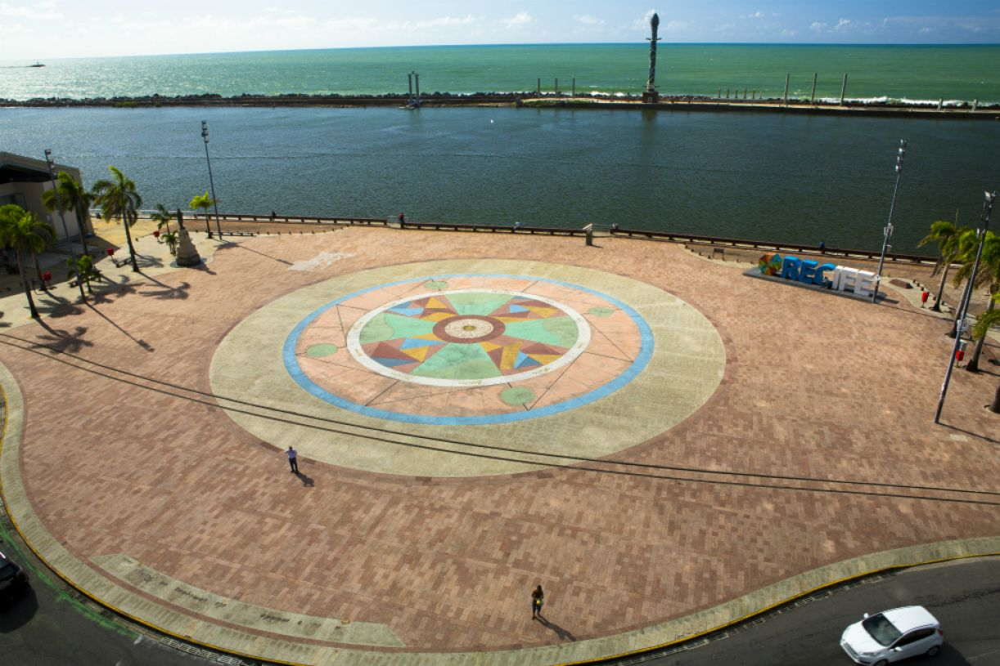
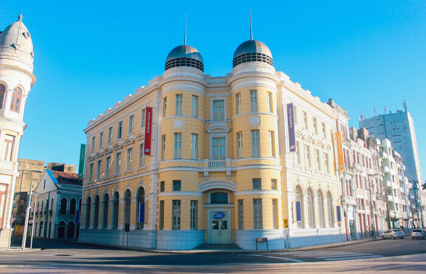
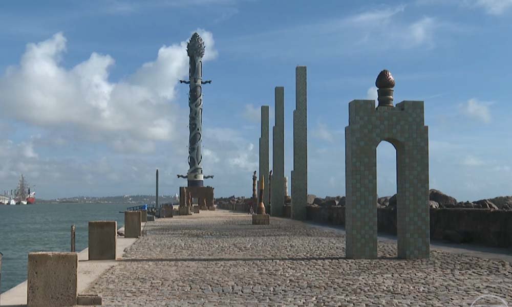

Ponto turístico Marco Zero
Localizado na Praça Rio Branco,a cidade remete aos tempos gloriosos da época colonial quando era um dos principais centros econômicos do país. Também é conhecido como local de fundação da cidade de Recife, indicado como ponto zero de todas as medidas oficiais das distâncias rodoviárias de Pernambuco, assinalado por uma placa colocada no chão da Praça Barão do Rio Branco, no Bairro do Recife. O lugar é um dos pontos mais importantes na capital Pernambucana e com bastante movimentação na época de Carnaval.
Na década de 90, o bairro passou por um processo de revitalização que modificou o desenho original da praça, transformando-a em um amplo largo. O antigo piso foi substituído por um grande painel em forma de rosa dos ventos realizado por Cícero Dias, artista pernambucano.
Rosa dos Ventos
Em 1999, a Praça do Marco Zero passou por uma reforma, a estátua do Barão do Rio Branco e o Marco Zero foram mudados de lugar, um pouco mais para o canto da praça. Com isso, além de ser o centro geográfico de Pernambuco, o Marco Zero passou a ser o centro de uma obra de arte do pintor pernambucano Cícero Dias, um dos mais importantes nomes do modernismo brasileiro: a Rosa dos Ventos. A pintura possui 20 metros de diâmetro e é formada por pedras de quartzo e granito com pigmentação colorida. A Rosa dos Ventos de Cícero Dias se tornou mais uma das grandes atrações da Praça do Marco Zero.
Caixa Cultural Recife
Em 1977, o prédio foi adquirido e se tornou sede da Bolsa de Valores de Pernambuco e da Paraíba até 2006, quando foi comprado pela Caixa Econômica Federal. O prédio tem estilo neoclássico datado de 1912 e projetado para ser a sede do Bank of London & South America Limited, atualmente funciona a Caixa Cultural Recife.
Parque das Esculturas Francisco Brennand
O Parque foi construído em 2000 e se tornou uma das maiores atrações turísticas da cidade,reúne dezenas de obras do artista plástico Francisco Brennand. A mais imponente delas é a Torre de Cristal, de 32 metros de altura, inspirada em uma flor descoberta pelo paisagista Roberto Burle Marx.